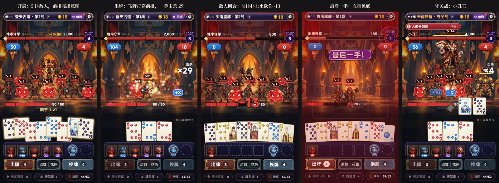
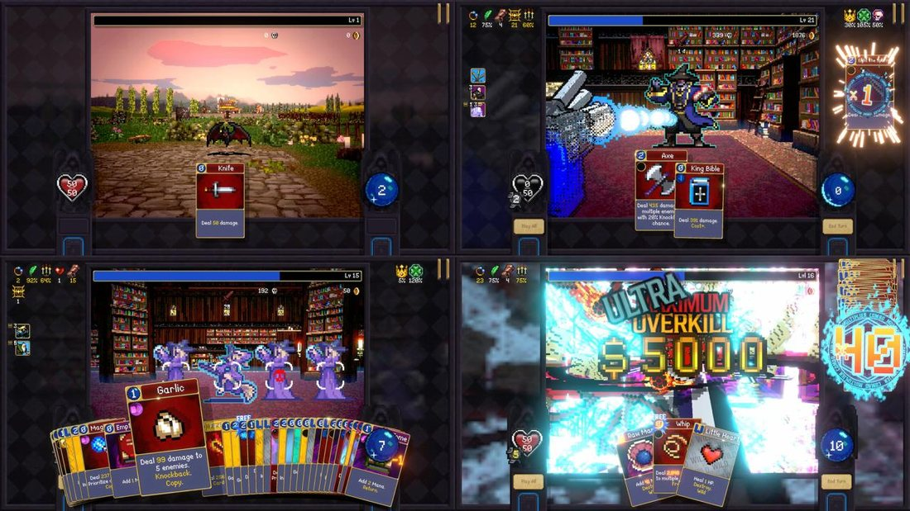
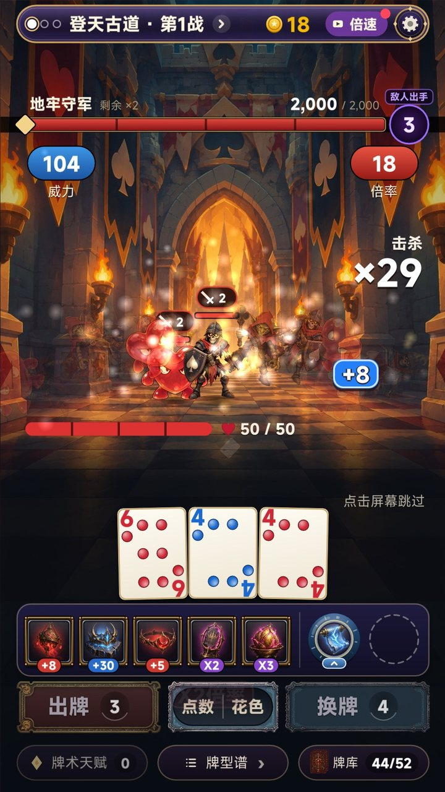
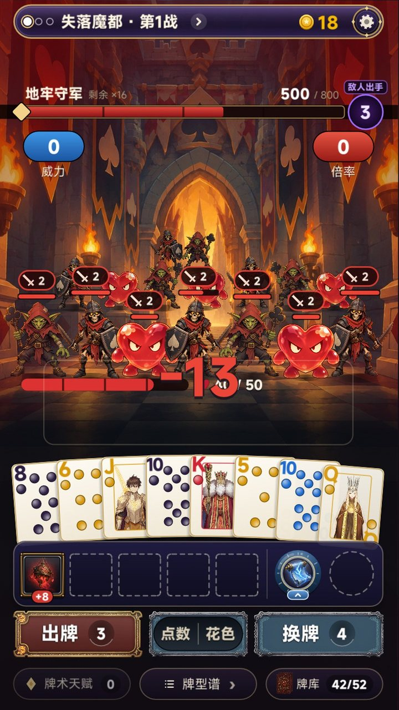
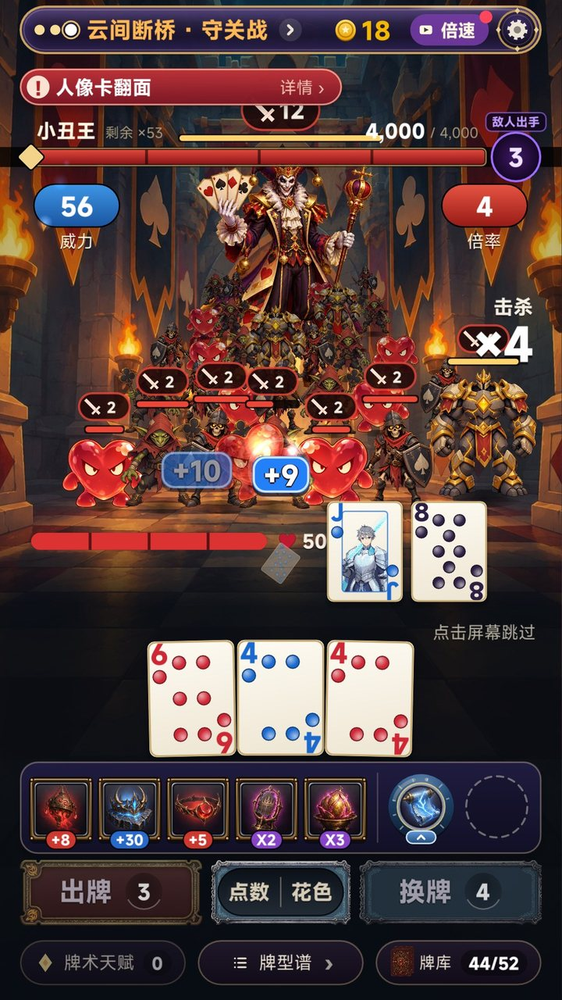

zwluoqi/EmberCards2 里改。厂商 FIRE工作室（507397）。
实机录屏（34 秒，游戏自己出牌；故意用弱开局，所以一手清不完，能看到敌人反击、掉血、最后一手、战败）：
| 缺的 | v6 | v7 |
|---|---|---|
| 敌人的回合 | 没有。敌人只是站着等被泼掉 | 前排亮出攻击意图；你每出一手，没死的前排扑上来砍你 |
| 你的血量 | 没有 | 屏幕中间一条血条（满血 50），被砍掉一格，见底就输 |
| 打中谁 | 看不出来 | 飞牌从手牌飞向具体那一只，打中闪白抖动，血条往下掉，死了后仰倒地 |
| 压力 | 没有 | 「敌人出手」倒数，最后一手全屏发红 |
| 敌人 | 灰色剪影 | 有血条、有意图、会走位补位，精英大一号、守关站后排正中 |

| 看什么 | 数据（团队 10-26 拆解：steamdb-creater/data/2026/2026-10-26/analysis/TimidKnight-VC玩法数值拆解.md） |
|---|---|
| 口碑 | Steam 19,497 条评测，96% 好评；简中 5,621 条，97% |
| 规模 | 官方：首周 100 万玩家；历史在线峰值 45,686 |
| 手机 | 2026-10-12 上 iOS / Android，只有横屏，买断 $9.99；国区未上架 |
| 战斗 | 第一人称；敌人每排最多 7 只（拆包 rowWidth = 7）；玩家基础血量 50（baseHealth = 50）；敌人有意图、前排出手；不同武器打不同的位置（鞭子打每列最前、飞刀从前排扫、大蒜只打前排）；Boss 头上一排眼睛倒数 |
二代照搬的：第一人称、按排站、前排意图和出手、玩家血量 50、精英、守关站后排、击杀后补位。
二代换掉的：它的出牌靠「费用从低到高连段」，二代换成一代的扑克牌型 + 小丑牌装备。一代这套牌局的留存是团队最好的（次留 22–27%），牌型比连段更好懂。
| 看什么 | 内容 |
|---|---|
| 和玩法的搭配 | 牌本来就是扑克牌：花色、点数、牌型、小丑牌装备全是原样，玩家一眼就懂，不用记任何翻译 |
| 需求 | 小丑牌 3,319 万（玩家在搜 Balatro 手机版）；扑克肉鸽 1,636 万 / 标题 0 款；地牢肉鸽 6,362 万 / 标题 0 款（元气骑士、重生细胞这一路的玩家） |
| 新 | TapTap 上没有「扑克牌型 + 地牢战斗」的竖屏游戏；《吸血鬼爬行者》本身国区没上架 |
| 世界观 | 小丑王把一座扑克城堡变成了地牢，四种花色的守军守着每一层。你是牌术师，一副扑克牌就是全部武器 |
| 敌人 | 黑桃骷髅兵 / 红心史莱姆 / 梅花哥布林 / 精英方块魔像 / 守关小丑王（截图里都是这次出的素材） |
| 画风 | 风格化手绘：粗线条、暖色火把光 + 深青色阴影、牌的红金白点缀；不是像素、不是二次元、不是写实 |
名字： 1. 《扑克肉鸽：牌术师闯地牢》（推荐，「扑克肉鸽」标题 0 款） 2. 《地牢肉鸽：一手同花顺》 3. 《小丑王的地牢》
| 战斗里看到的 | 一代规则里对应的 | 说明 |
|---|---|---|
| 一波敌人（普通 20 / 精英 28 / 守关 36 只 × 1.25^(关−1)） | 这一关的目标分 | 每只的血量 = 目标分 ÷ 只数；守关战小丑王占 30% |
| 飞牌打倒几只 | 这一手的伤害（威力 × 倍率） | 计分途中按实时乘积一只只打倒，前排先、正中先 |
| 你的血量 50 | 这一战的出牌次数 | 每出一手、敌人没死光，前排反击扣一格；出牌次数用完 = 血量见底 = 战败 |
| 换牌时「格挡」 | 换牌不扣出牌次数 | 敌人照样扑上来，被挡下 |
| 「敌人出手」倒数 | 剩余出牌次数 | 最后一手全屏发红 |
| 大牌型（葫芦、同花以上）的牌雨 | 牌型 | 纯表现 |
这样做的代价：前排头上的攻击数字现在只是表现，真实掉血只由出牌次数决定。如果要做成《吸血鬼爬行者》那样「数字是真的、可以用护甲挡」，需要改规则（第 6 节 T6），会动一代的数值平衡，要跑 bot 重新调。
| 出牌：飞牌打穿前排，一手击杀 29 | 敌人回合：前排扑上来砍你 −13 | 守关战：小丑王 |
|---|---|---|
 |
 |
 |
devtools/record.sh shot paint_hit 1080x1920 out.png -- -dv-new -dv-nosave -rec-at=2.4（-rec-blind=boss 看守关战）；devtools/record.sh video 34 720x1280 out.mp4 -- -dv-new -dv-nosave -rec-jokers=j_jolly -rec-ante=2，弱开局才看得到反击。| 文件 | 改动 |
|---|---|
scripts/ui/crawl.lua（新，约 400 行） |
第一人称地牢；5 排 × 7 站位、补位；前排血条 + 攻击意图；飞牌、命中闪白、后仰倒地、烟和金币；敌人回合（扑上来、屏幕一红、掉血）和换牌格挡；你的血条；大牌型牌雨；本手击杀数；守关小丑王 |
scripts/ui/screens/round.lua |
战斗界面画 crawl；一代的施法特效、开场卡片、敌人台词不放 |
scripts/ui/magicboard.lua |
不画一代的法阵；血条名字改成「地牢守军 / 小丑王 · 剩余 ×N」；牌型名不写一代的法术名 |
scripts/ui/words.lua |
一代的魔法用词换回扑克用词：威力 / 倍率 / 出牌 / 换牌 / 牌库 / 顺子 / 同花…… |
scripts/main.lua |
打开 v7（HORDE_MODULE = "ui.crawl"）。改回 ui.horde 就是 v6 |
assets/image/crawl/（新） |
地牢走廊、3 种小怪、精英、小丑王 |
scripts/game/（规则引擎） |
一行没动，768 个测试全部通过 |
| 项 | 现状 | 要做的 |
|---|---|---|
| 牌型打哪里 | 所有牌型都是「前排先、正中先」 | 照《吸血鬼爬行者》的武器规则：对子打一列（像鞭子）、顺子从左扫到右（像飞刀）、三条打前排（像大蒜）、同花打一整排、四条砸中间、同花顺全屏 |
| 守关倒数 | 小丑王只站着 | 照它的「Boss 眼睛」：每出一张牌亮一只眼，眼睛全亮就出手（塞一张捣乱牌） |
| 装备栏、按钮、顶栏 | 还是一代紫金样式 | 换成扑克城堡风格（红黑金） |
| 第一人称的手 | 飞牌从手牌位置飞出 | 加一双持牌的手（一代就有第一人称掌心施法的代码，可以改） |
| 别的界面 | 选关、商店、结算还是一代的 | 换皮 |
| T6（可选，改规则） | 攻击数字是表现 | 敌人攻击数字变成真伤害，♦ 牌给护甲、♥ 牌回血；要跑 bot 重新调数值 |
切片过关标准：你扫码在真机上玩，认可「像在战斗」；真机 35 只同屏帧率稳定；同种子回放测试通过。
| 版本 | 题材 | 结果 |
|---|---|---|
| v6 | 调色师（实机切片） | 没有正常战斗的体验 |
| v5 | 乐队 / 调色 / 烟花（概念图） | 选了调色 → v6 |
| v4 | 新怪谈 / 深海 / 地府 | 和玩法不搭、画风低 |
| v3 | 仙门降妖 | 题材不新、页游感 |
| v2 / v1 | 武侠 / 末日 | — |